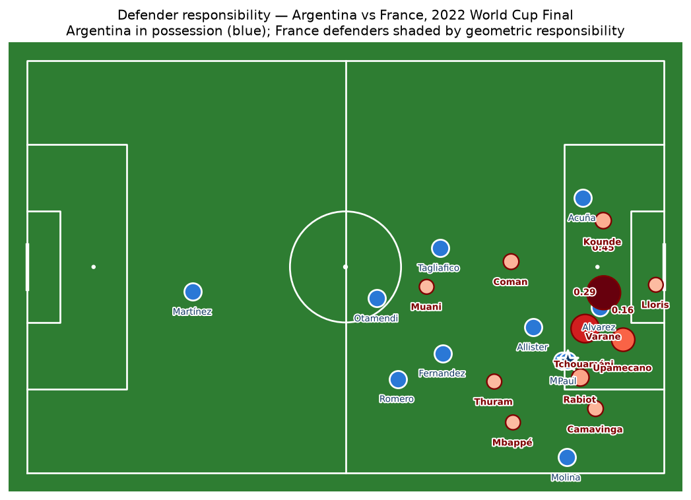
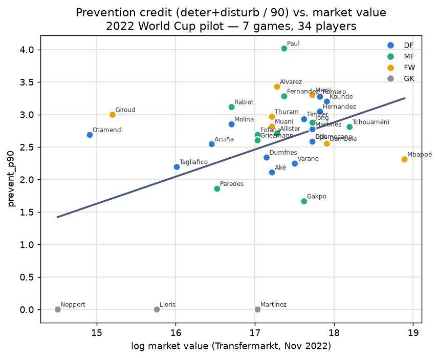
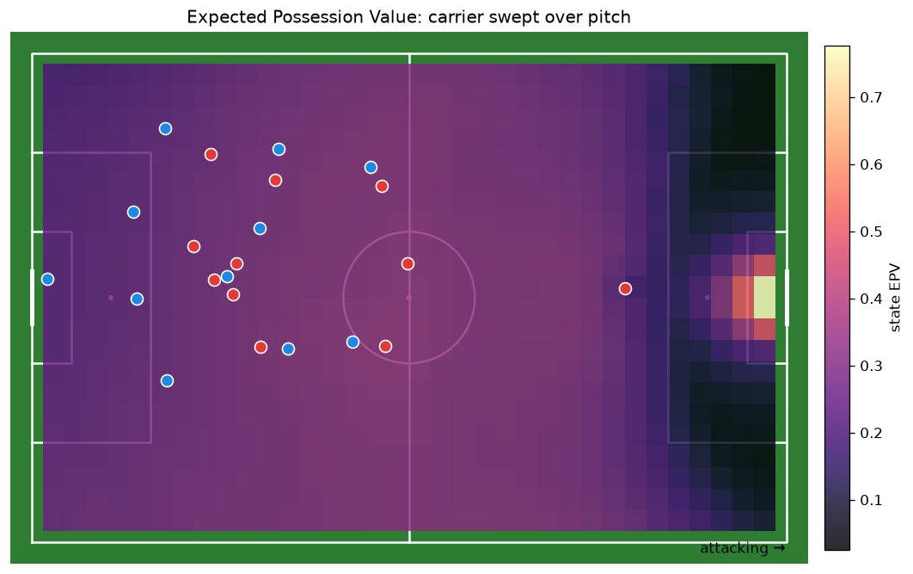
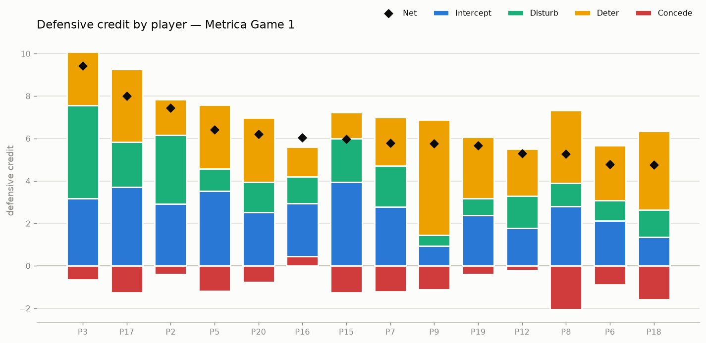
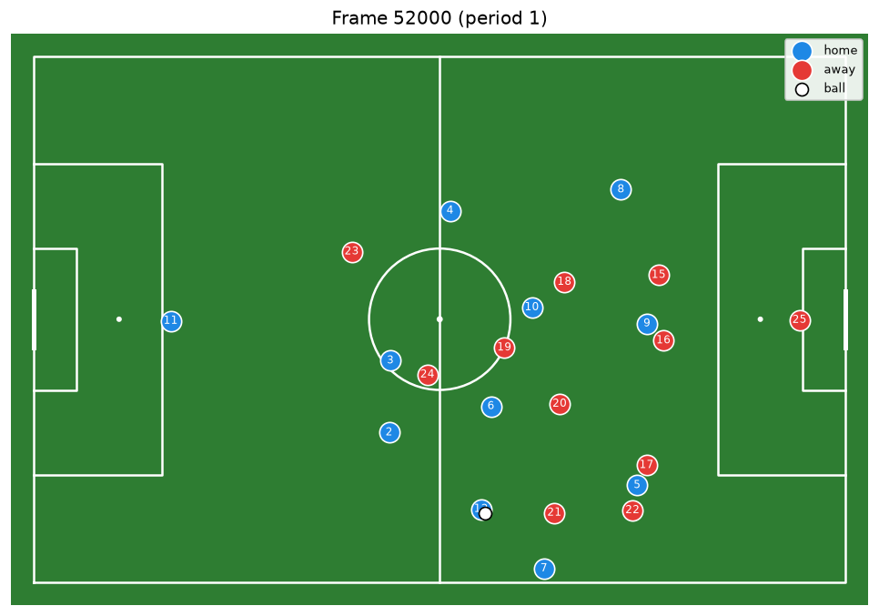
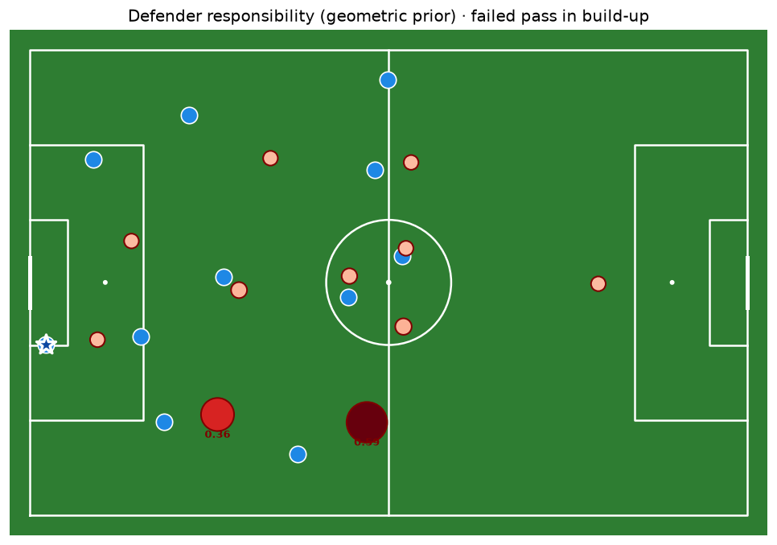
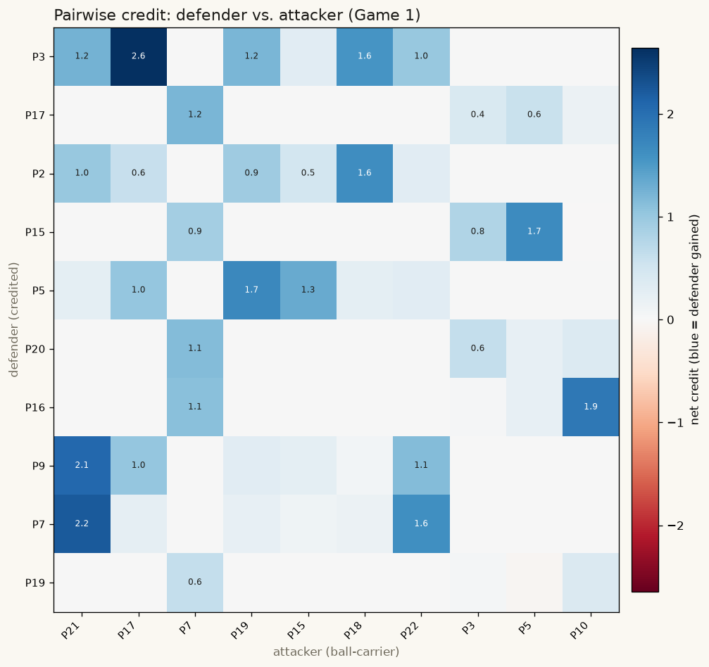
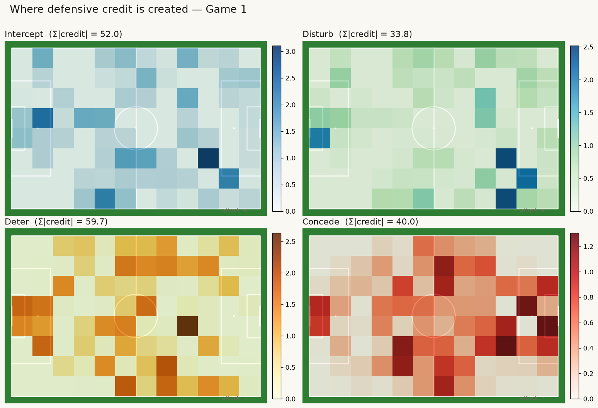

An independent, test-driven reimplementation of “Better Prevent than Tackle” by Kim et al., which uses graph neural networks to value defense in soccer.
Held-out metrics, ranked by reproduction fidelity (my value ÷ paper value). Most GNNs train on Metrica Game 1 and validate on Game 2; UxG uses 45,945 external Wyscout shots. The three rare-event models marked +PFF are retrained on the 7-game PFF World Cup pilot (≈7.9k passes, 199 shots) — the paper's own numbers come from 564 private matches, so this is a direct test of whether the earlier gaps were about data rather than method.
| # | Model | Metric | Mine | Paper | Fidelity | Status |
|---|---|---|---|---|---|---|
| 1 | c1 · goal-scoring P(score soon) · GAT |
AUC | 0.749 | ~0.68 | 1.10 |
reproduced |
| 2 | c3 · UxG unblocked xG · logistic |
AUC | 0.785 | 0.775 | 1.01 |
reproduced |
| 3 | b2 · shot-blocking P(blocked) · GAT · +PFF |
AUC | 0.672 | 0.672 | 1.00 |
reproduced |
| 4 | b1 · pass-success P(complete) · GAT |
AUC | 0.823 | 0.917 | 0.90 |
reproduced |
| 5 | a1 · action-selection which option · GAT |
MRR | 0.670 | 0.800 | 0.84 |
beats baseline |
| 6 | d1 · responsibility interceptor · GAT · +PFF |
MRR | 0.436 | 0.694 | 0.63 |
improved · trails base |
| 7 | c2 · goal-conceding P(concede soon) · GAT · +PFF |
AUC | 0.48 | ~0.62 | n/a |
no signal |
Each model's held-out metric against the paper's. On the dashed line I match the paper exactly; above it I exceed it; below it I trail. Where I trail, the gap is about data, not method — and I tested that directly: retraining the three rare-event models on 7 World Cup matches put b2 right on the line and lifted d1 from 0.272 to 0.436. Only c2 (conceding, a 1%-rare label) still needs far more.
The paper reports GAT beating GCN, GIN, and boosting. On two public matches it does not. GCN and boosting match or beat it. It reads like a scale effect: attention needs a lot more data to pay off. Best per row in blue.
| Task | Metric | GAT | GCN | GIN | XGBoost | CatBoost |
|---|---|---|---|---|---|---|
| b1 · pass-success | AUC ↑ | 0.823 | 0.880 | 0.701 | 0.869 | 0.862 |
| a1 · action-selection | MRR ↑ | 0.670 | 0.694 | 0.278 | n/a | n/a |
I ran the full credit pipeline over 7 knockout games of PFF’s 2022 World Cup tracking, covering 34 defenders, and joined each player’s Transfermarkt market value from November 2022. The question: which kind of defending does the transfer market actually pay for? I compared two skills against value.
In short, the market pays defenders for where they stand, not for how often they tackle, which is the paper’s central claim. (r is a correlation: 0 means no relationship, +1 means the two rise together in lockstep.)
Treat this as directional, not proven. The value models are trained on Metrica data, so cross-provider differences leave the exact numbers approximate, and 34 players across 7 games is far short of the paper’s 564. The other half of the claim, that giving up danger should count against a defender, did not reproduce cleanly at this sample size.
Generated by the running code on real match data.







